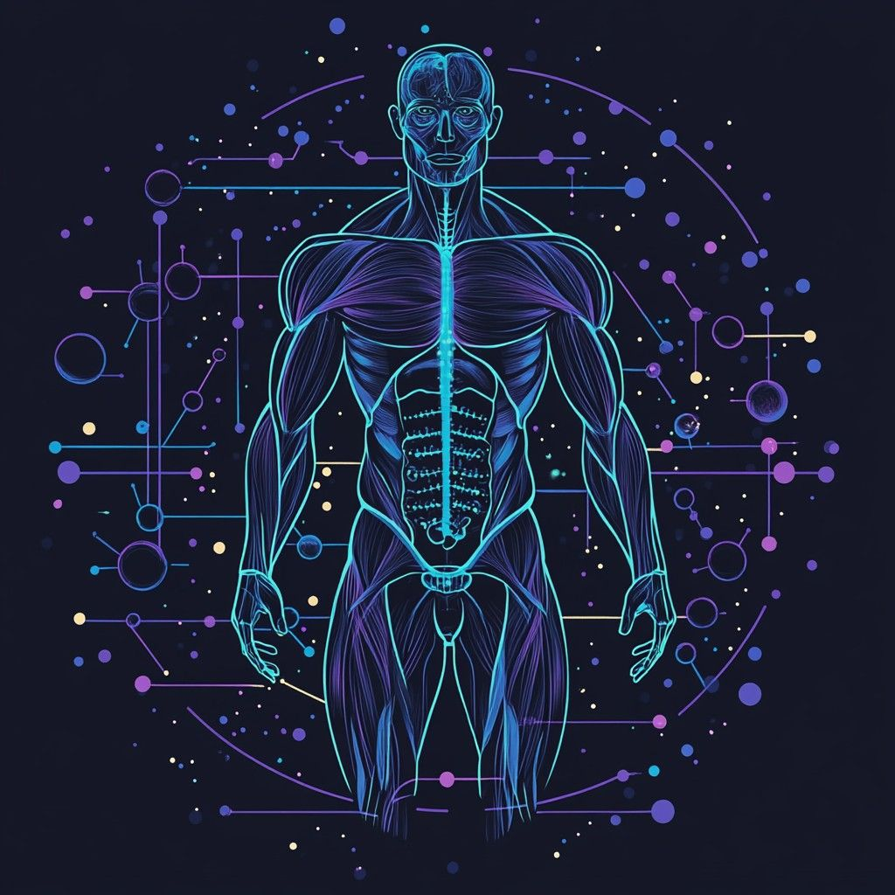

🧬 運動激素

Irisin：肌肉激素
肌肉激素 (Irisin) 是由肌肉在運動過程中分泌的重要激素，其主要作用在於促進白色脂肪向棕色脂肪轉化， 改善新陳代謝，同時對肌肉、骨骼及神經系統具有保護作用。無論是有氧運動、阻抗訓練還是 HIIT， 都可激發肌肉激素 (Irisin) 的分泌，進而提升整體健康。
閱讀更多 →
Irisin：奇蹟分子
肌肉激素 (Irisin) 是由肌肉在運動過程中分泌的重要激素，其主要作用在於促進白色脂肪向棕色脂肪轉化， 改善新陳代謝，同時對肌肉、骨骼及神經系統具有保護作用。無論是有氧運動、阻抗訓練還是 HIIT， 都可激發肌肉激素 (Irisin) 的分泌，進而提升整體健康。
閱讀更多 →